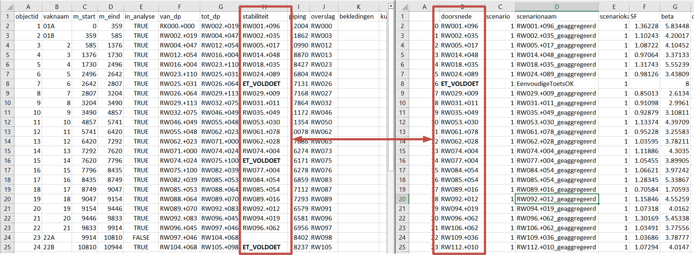
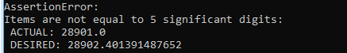

Vakindeling#
De basis van een veiligheidsrendementberekening is één vakindeling die voor alle faalmechanismen gebruikt wordt. Als eerste wordt een invoerbestand gevuld, waarna de workflow voor het maken van de vakindeling kan worden gedraaid.
Structuur van het invoerbestand van de vakindeling#
De basis voor het genereren van de vakindeling is het invoerbestand
Vakindeling.csv. Dit bestand is, ervan uitgaande dat de standaardinstallatieinstructies gevolgd zijn terug te vinden in:
C:\Veiligheidsrendement\.env\Lib\site-packages\preprocessing\default_files.Doel van deze workflow is een geojson bestand te creeren waarin alle vakken geografisch zijn gerepresenteerd. Dit bestand is ook invoer voor andere workflows. Dit bestand wordt in de mappenstructuur weggeschreven in ``intermediate_filesvakindeling
Het invoerbestand Vakindeling.csv heeft de volgende kolommen die
ingevuld moeten worden:
Kolom |
Beschrijving |
|
|---|---|---|
objectid |
Verplicht |
Unieke identifier (moeten verschillende getallen zijn) |
vaknaam |
Verplicht |
Nummer/naam van het dijkvak (moet uniek zijn, kan identiek zijn aan OBJECTID) |
m_start |
Verplicht |
startpunt op lijn van traject |
m_eind |
Verplicht |
eindpunt op lijn van traject |
in_analyse |
Verplicht |
Vak meenemen in analyse of niet (TRUE/FALSE) |
van_dp |
Optioneel |
Begrenzing dijkpaalnummers |
tot_dp |
Optioneel |
Begrenzing dijkpaalnummers |
stabiliteit |
Optioneel |
Moet overeen komen met een waarde in de kolom doorsnede bij Stabiliteit_default.csv. Hiermee wordt aangegeven welke doorsnede bij welk vak hoort. |
piping |
Optioneel |
Moet overeen komen met een waarde in de kolom doorsnede bij Piping_default.csv. Hiermee wordt aangegeven welke doorsnede bij welk vak hoort. |
overslag |
Optioneel |
Moet overeen komen met een waarde in de kolom doorsnede bij HR_default.csv. Hiermee wordt aangegeven welke doorsnede bij welk vak hoort. |
bekledingen |
Optioneel |
Moet overeen komen met een waarde in de kolom doorsnede bij Bekleding_default.csv. Hiermee wordt aangegeven welke doorsnede bij welk vak hoort. |
opmerkingen |
Optioneel |
Hier kunnen eventuele opmerkingen worden geplaatst. Deze kolom is voor de gebruiker, en wordt niet gebruikt in de VRTOOL. |
Het vullen van het invoerbestand#
In onderstaande figuur is met een voorbeeld voor stabiliteit
geillustreerd hoe de koppeling tussen doorsnedes en de vakindeling moet
worden ingevoerd. Merk op dat het mogelijk is voor meerdere vakken
dezelfde doorsnede te hanteren (een voorbeeld in de figuur is de
dikgedrukte doorsnede ET_VOLDOET). Deze hoeft dan slechts 1x genoemd
te worden in het STBI invoerbestand, maar kan bij meerdere vakken worden
gebruikt.

Belangrijk bij het genereren van de vakindeling zijn met name de
m_start en m_eind parameters. Wanneer de lengte van het traject
(dus de maximale m_eind) teveel afwijkt (grofweg >1 meter) van de
lengte van de shape uit het Nationaal Basisbestand Primaire
Waterkeringen wordt een foutmelding gegeven.
Draaien van de workflow voor het genereren van een vakindeling#
De gebruiker kan de workflow als volgt aanroepen vanuit de Anaconda Prompt (activeer eerst environment):
python -m preprocessing vakindeling --config_file {config_bestand}
Daarbij moet {config_bestand} verwijzen naar de locatie van het preprocessing.config bestand.
Voor deze workflow zijn de volgende waarden in dat bestand van belang:
Parameter |
Omschrijving |
|---|---|
traject_id |
Naam van het traject |
vakindeling_csv_path |
Pad naar het invoerbestand van de vakindeling. Deze moet eventueel nog worden aangepast. |
vakindeling_geojson |
Pad naar de map waar de geojson van de vakindeling moet worden opgeslagen. Hier wordt ook automatisch een kaart van de vakindeling gegenereerd. |
traject_shapefile |
Default wordt deze niet gebruikt, maar hier kan een alternatieve shape van het traject worden ingevoerd. Standaard wordt de shape uit het Nationaal Basisbestand Primaire Waterkeringen gebruikt. |
flip_traject |
In sommige gevallen is de vakindeling in de tegenovergestelde richting van de shapefile gedefinieerd. Door hier |
Na het genereren van de vakindeling is het altijd belangrijk deze goed te controleren: de vakindeling is een belangrijke basis voor de volgende workflows.
Mogelijke foutmeldingen#
Foute trajectlengte#
Een foutmelding die vaak voorkomt is wanneer de totale lengte van het traject niet overeenkomt met het NWBP. Daarvoor wordt gekeken naar de hoogste M-waarde, en de lengte van de shape uit het Nationaal Basisbestand Primaire Waterkeringen. Deze moeten ongeveer (op de meter nauwkeurig) overeenkomen.
Let op: de totale trajectlengte moet afgerond op 5 cijfers (dus bij een lengte van >10000 meter afgerond op 1 meter) niet korter zijn dan de verwachte trajectlengte, maar mag zeker niet langer zijn. Dus rond altijd de verwachte lengte af naar beneden. Onderstaand is een voorbeeld van een foutmelding weergegeven wanneer de lengte in vakindeling.csv te kort is. Wanneer er een klein verschil is in trajectlengte is het advies om de waarde op basis van de foutmelding in het csv-bestand aan te passen: een meter meer of minder heeft geen invloed op de resultaten. Bij grote verschillen is wel raadzaam om de ligging van de vakken op basis van het NBPW en de shape die als bron voor de M-waarden is gebruikt te vergelijken.
